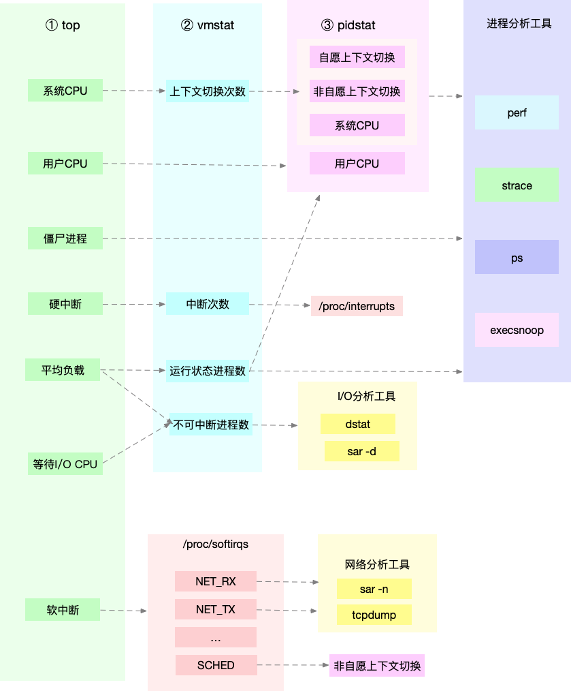
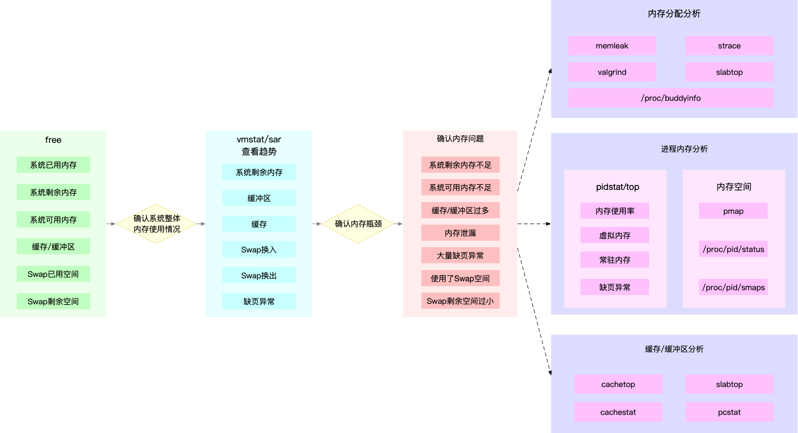
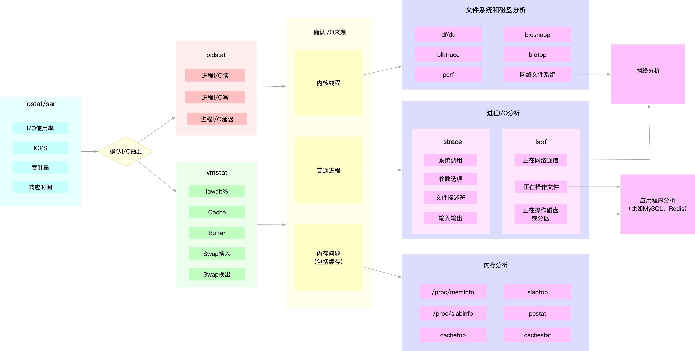

系统资源瓶颈
系统资源的瓶颈，可以通过 USE 法，即使用率、饱和度以及错误数这三类指标来衡量。系统的资源，可以分为硬件资源和软件资源两类。
- 如 CPU、内存、磁盘和文件系统以及网络等，都是最常见的硬件资源。
- 而文件描述符数、连接跟踪数、套接字缓冲区大小等，则是典型的软件资源。
CPU 性能分析
利用 top、vmstat、pidstat、strace 以及 perf 等几个最常见的工具，获取 CPU 性能指标后，再结合进程与 CPU 的工作原理，就可以迅速定位出 CPU 性能瓶颈的来源。

实际上，top、pidstat、vmstat 这类工具所汇报的 CPU 性能指标，都源自 /proc 文件系统（比如 /proc/loadavg、/proc/stat、/proc/softirqs 等）。这些指标，都应该通过监控系统监控起来。虽然并非所有指标都需要报警，但这些指标却可以加快性能问题的定位分析。
比如说，当你收到系统的用户 CPU 使用率过高告警时，从监控系统中直接查询到，导致 CPU 使用率过高的进程；然后再登录到进程所在的 Linux 服务器中，分析该进程的行为。
你可以使用 strace，查看进程的系统调用汇总；也可以使用 perf 等工具，找出进程的热点函数；甚至还可以使用动态追踪的方法，来观察进程的当前执行过程，直到确定瓶颈的根源。
内存性能分析
可以通过 free 和 vmstat 输出的性能指标，确认内存瓶颈；然后，再根据内存问题的类型，进一步分析内存的使用、分配、泄漏以及缓存等，最后找出问题的来源。

同 CPU 性能一样，很多内存的性能指标，也来源于 /proc 文件系统（比如 /proc/meminfo、/proc/slabinfo 等），它们也都应该通过监控系统监控起来。这样，当你收到内存告警时，就可以从监控系统中，直接得到上图中的各项性能指标，从而加快性能问题的定位过程。
比如说，当你收到内存不足的告警时，首先可以从监控系统中。找出占用内存最多的几个进程。然后，再根据这些进程的内存占用历史，观察是否存在内存泄漏问题。确定出最可疑的进程后，再登录到进程所在的 Linux 服务器中，分析该进程的内存空间或者内存分配，最后弄清楚进程为什么会占用大量内存。
磁盘和文件系统 I/O 性能分析
当你使用 iostat ，发现磁盘 I/O 存在性能瓶颈（比如 I/O 使用率过高、响应时间过长或者等待队列长度突然增大等）后，可以再通过 pidstat、 vmstat 等，确认 I/O 的来源。接着，再根据来源的不同，进一步分析文件系统和磁盘的使用率、缓存以及进程的 I/O 等，从而揪出 I/O 问题的真凶。

同 CPU 和内存性能类似，很多磁盘和文件系统的性能指标，也来源于 /proc 和 /sys 文件系统（比如 /proc/diskstats、/sys/block/sda/stat 等）。自然，它们也应该通过监控系统监控起来。这样，当你收到 I/O 性能告警时，就可以从监控系统中，直接得到上图中的各项性能指标，从而加快性能定位的过程。
比如说，当你发现某块磁盘的 I/O 使用率为 100% 时，首先可以从监控系统中，找出 I/O 最多的进程。然后，再登录到进程所在的 Linux 服务器中，借助 strace、lsof、perf 等工具，分析该进程的 I/O 行为。最后，再结合应用程序的原理，找出大量 I/O 的原因。
网络性能分析
网络性能的分析，要从 Linux 网络协议栈的原理来切入。下面这张图，就是 Linux 网络协议栈的基本原理，包括应用层、套机字接口、传输层、网络层以及链路层等。
而要分析网络的性能，自然也是要从这几个协议层入手，通过使用率、饱和度以及错误数这几类性能指标，观察是否存在性能问题。比如 ：
- 在链路层，可以从网络接口的吞吐量、丢包、错误以及软中断和网络功能卸载等角度分析；
- 在网络层，可以从路由、分片、叠加网络等角度进行分析；
- 在传输层，可以从 TCP、UDP 的协议原理出发，从连接数、吞吐量、延迟、重传等角度进行分析；
- 在应用层，可以从应用层协议（如 HTTP 和 DNS）、请求数（QPS）、套接字缓存等角度进行分析。
同前面几种资源类似，网络的性能指标也都来源于内核，包括 /proc 文件系统（如 /proc/net）、网络接口以及 conntrack 等内核模块。这些指标同样需要被监控系统监控。这样，当你收到网络告警时，就可以从监控系统中，查询这些协议层的各项性能指标，从而更快定位出性能问题。
比如，当你收到网络不通的告警时，就可以从监控系统中，查找各个协议层的丢包指标，确认丢包所在的协议层。然后，从监控系统的数据中，确认网络带宽、缓冲区、连接跟踪数等软硬件，是否存在性能瓶颈。最后，再登录到发生问题的 Linux 服务器中，借助 netstat、tcpdump、bcc 等工具，分析网络的收发数据，并且结合内核中的网络选项以及 TCP 等网络协议的原理，找出问题的来源。
应用程序瓶颈
第一种资源瓶颈，其实还是指刚才提到的 CPU、内存、磁盘和文件系统 I/O、网络以及内核资源等各类软硬件资源出现了瓶颈，从而导致应用程序的运行受限。对于这种情况，我们就可以用前面系统资源瓶颈模块提到的各种方法来分析。
第二种依赖服务的瓶颈，也就是诸如数据库、分布式缓存、中间件等应用程序，直接或者间接调用的服务出现了性能问题，从而导致应用程序的响应变慢，或者错误率升高。这说白了就是跨应用的性能问题，使用全链路跟踪系统，就可以帮你快速定位这类问题的根源。
最后一种，应用程序自身的性能问题，包括了多线程处理不当、死锁、业务算法的复杂度过高等等。对于这类问题，在我们前面讲过的应用程序指标监控以及日志监控中，观察关键环节的耗时和内部执行过程中的错误，就可以帮你缩小问题的范围。
如果这些手段过后还是无法找出瓶颈，你还可以用系统资源模块提到的各类进程分析工具，来进行分析定位。比如：
- 你可以用 strace，观察系统调用；
- 使用 perf 和火焰图，分析热点函数；
- 甚至使用动态追踪技术，来分析进程的执行状态。
当然，系统资源和应用程序本来就是相互影响、相辅相成的一个整体。实际上，很多资源瓶颈，也是应用程序自身运行导致的。比如，进程的内存泄漏，会导致系统内存不足；进程过多的 I/O 请求，会拖慢整个系统的 I/O 请求等。
小结
从系统资源瓶颈的角度来说，USE 法是最为有效的方法，即从使用率、饱和度以及错误数这三个方面，来分析 CPU、内存、磁盘和文件系统 I/O、网络以及内核资源限制等各类软硬件资源。关于这些资源的分析方法，我也带你一起回顾了咱们专栏前面几大模块的分析套路。
虽然我把瓶颈分为了系统和应用两个角度，但在实际运行时，这两者往往是相辅相成、相互影响的。系统是应用的运行环境，系统的瓶颈会导致应用的性能下降；而应用的不合理设计，也会引发系统资源的瓶颈。我们做性能分析，就是要结合应用程序和操作系统的原理，揪出引发问题的真凶。